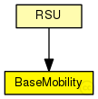
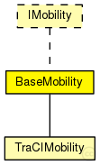

This documentation is released under the Creative Commons license
This documentation is released under the Creative Commons licenseModule which is responsible for mobility related information like position and movement BaseMobility itself defines a static mobility pattern (means only a position, no movement). Mobility modules which extend from this module will define more complex movement patterns.
The following diagram shows usage relationships between types. Unresolved types are missing from the diagram. Click here to see the full picture.
The following diagram shows inheritance relationships for this type. Unresolved types are missing from the diagram. Click here to see the full picture.
| Name | Type | Description |
|---|---|---|
| TraCIMobility | simple module |
Used in modules created by the TraCIScenarioManager. |
| Name | Type | Description |
|---|---|---|
| RSU | compound module | (no description) |
| Name | Type | Default value | Description |
|---|---|---|---|
| notAffectedByHostState | bool | true | |
| coreDebug | bool | false |
debug switch for the core framework |
| x | double |
x coordinate of the nodes' position (-1 = random) |
|
| y | double |
y coordinate of the nodes' position (-1 = random) |
|
| z | double |
z coordinate of the nodes' position (-1 = random) |
| Name | Value | Description |
|---|---|---|
| display | i=block/cogwheel |
// Module which is responsible for mobility // related information like position and movement // BaseMobility itself defines a static mobility // pattern (means only a position, no movement). // Mobility modules which extend from this module // will define more complex movement patterns. simple BaseMobility like IMobility { parameters: bool notAffectedByHostState = default(true); bool coreDebug = default(false); // debug switch for the core framework double x; // x coordinate of the nodes' position (-1 = random) double y; // y coordinate of the nodes' position (-1 = random) double z; // z coordinate of the nodes' position (-1 = random) @display("i=block/cogwheel"); }
This documentation is released under the Creative Commons license